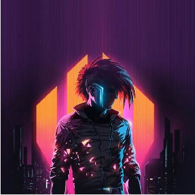
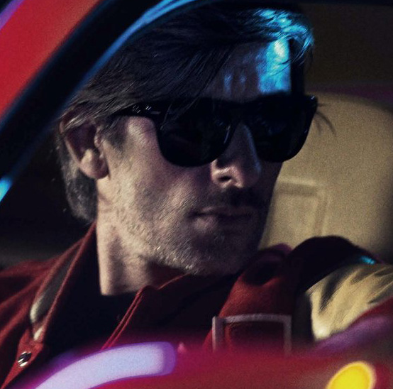
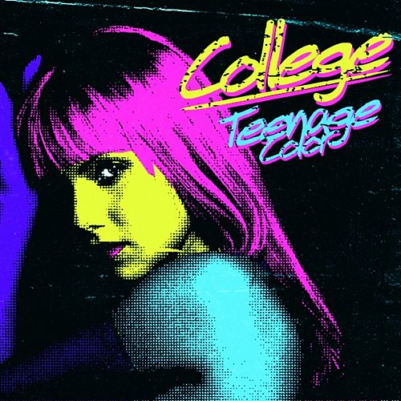
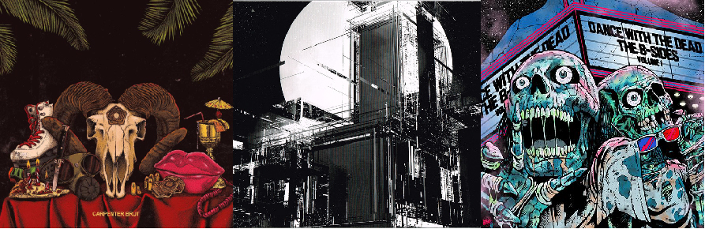

Synthwave, o que é isso?

Via Giphy
O Synthwave , também conhecido como Retrowave ou Outrun, é um estilo musical da música eletrônica que surgiu no início dos anos 2000. Com uma grande parte instrumental, é em grande parte inspirado para melodias dos anos 80 e tudo relacionado a New Wave gênero musical. Portanto, temos SYNTH (esizer) e (novo) WAVE que dão o nome Synthwave. Alguns músicos lendários, como Jean-Michel Jarre, Giorgio Moroder, Wendy Carlos, John Carpenter, Vangelis ou Tangerine Dream, trouxeram muito para esse estilo. A base do ritmo também é característica dos sons de bateria retirados diretamente dos anos 80.
Via Scandroid
No entanto, os compositores da Synthwave também usam modernas máquinas musicais para criar linhas de baixo a partir da compressão SideChain e, às vezes, algumas batidas pesadas e poderosas, como podemos encontrar em House Music, Electro Rock ou Hip Hop. Alguns gêneros associados a esse estilo apareceram como Darkwave (ou Darksynth), inspirado na atmosfera sonora de filmes de terror, Synthpop com vozes tratadas da mesma maneira que nos anos 80, Dreamwave com toalhas de mesa melancólicas e românticas, mas também Futursynth , diretamente inspirado no retrô filmes futuristas.
França, o ponto de partida
Vincent Belorgey
Em 2005, um EP foi lançado na Record Makers, chamado Teddy Boy e foi produzido por Vincent Belorgey, conhecido como Kavinsky . Continha uma faixa puramente emblemática, o Testarossa Autodrive. É nessa faixa que a palavra OUTRUN , associada ao Synthwave, faz sentido (música com a qual podemos imaginar entrando rapidamente em um carro esportivo) e também é a palavra que Kavinsky escolheu como o nome de seu primeiro álbum , lançado em 2013 e co-produzido por SebastiAn (Ed Banger Records) na mesma gravadora Record Makers. Dois vídeos foram feitos para os hits 'Protovision' e 'Odd Look', com uma atmosfera sombria (de noite), mas também com seu lendário carro esporte , o Ferrari Testarossa (1984), tudo remanescente dos anos 80 .
College - Teenage color
Em 2007, paralelamente ao projeto Sexy Sushi, da dupla Electro Clash (como Mitch Silver) , o compositor francês David Grellier lançou um projeto solo musical sob o nome de College . Um EP 'Teenage Color' e um álbum 'Secret Diary' foram lançados pelo VALERIE Collective, que ele criou. Com sua pegada sonora muito distinta , podemos estimar que foi quando o estilo Synthwave realmente começou. Enquanto isso, bandas francesas como Minitel Rose , The Outrunners e entre outros participaram do movimento Synthwave com critérios musicais idênticos .
Em 2011, o álbum do College 'Northern Council' foi
lançado com a famosa faixa chamada 'Real Hero',
em colaboração com a Electric Youth . Foi um dos
destaques do filme DRIVE, do diretor dinamarquês
Nicolas Winding Refn. A trilha sonora também foi
aprimorada pelo lendário 'Nightcall' de Kavinsky ,
produzido pela metade dourada do Daft Punk . .
Muitos outros eventos chamaram a atenção do
público para esse gênero musical e levaram ao
surgimento de grandes artistas de todo o mundo.
Após o fenômeno DRIVE, em 2011, um grande número de artistas surgiu, inspirado na trilha sonora e no visual deste filme. Necessariamente, seguiu-se a criação de várias gravadoras , como Rosso Corsa Records (Mitch Murder, Miami Night 1984, Lazerhawk…) , Telefuture Records (Betamaxx, Perturbator…) , NRW Records (Dance With The Dead, Lifelike, Futurecop !, Waveshaper… ) , Lazerdiscs Records (Valentim Absoluto, Robert Parker, Niky Nine, Morgan Willis, Z6BR3…) e muitos outros. Observe que um famoso canal do YouTube chamado NewRetroWave foi criado e ganhou uma quantidade impressionante de seguidores.
Visualmente , através das capas e videoclipes de seus artistas, o Synthwave transmite um mundo retro-futurista pronunciado , referindo-se diretamente às melhores imagens de ficção científica e filmes de terror dos anos 80 (Blade Runner, Tron, Terminator, Aliens…) . Esteticamente, como mencionado acima, o filme DRIVE dá uma nova vida ao universo Synthwave com seu estilo de perseguir carros (de volta às raízes de Kavinsky e sua Ferrari) , mas também ao curta-metragem Kung Fury e ao mundo dos videogames como a Hotline Miami , Furi, Power Drive 2000, Far Cry 3 : Blood Dragon ou Neon Drive
Da esquerda para direita: Carpenter Brut - Trilogy, Pertubator - New Model, Dance with the dead - B-sides: Vol.1
College (com seu Valerie Collective) e Kavinsky , sendo o primeiro nesse estilo musical , deram um grande passo a muitos artistas. O lado sombrio do Synthwave chamado ' Darkwave ' mostrava músicos como Carpenter Brut, Perturbator, Power Glove, Dance with the Dead, Kn1ght entre outros. O lado ensolarado mostrava Mitch Murder, Miami Nights 1984, Highway Superstar entre outros. A ' Dreamwave ' para um relaxante e romântico lado com Timecop1983, Futurecop entre outros. O ' Synthpop'acompanhava vozes com GUNSHIP, Electric Youth, Le Cassette, The Midnight, Arcade High e outros.